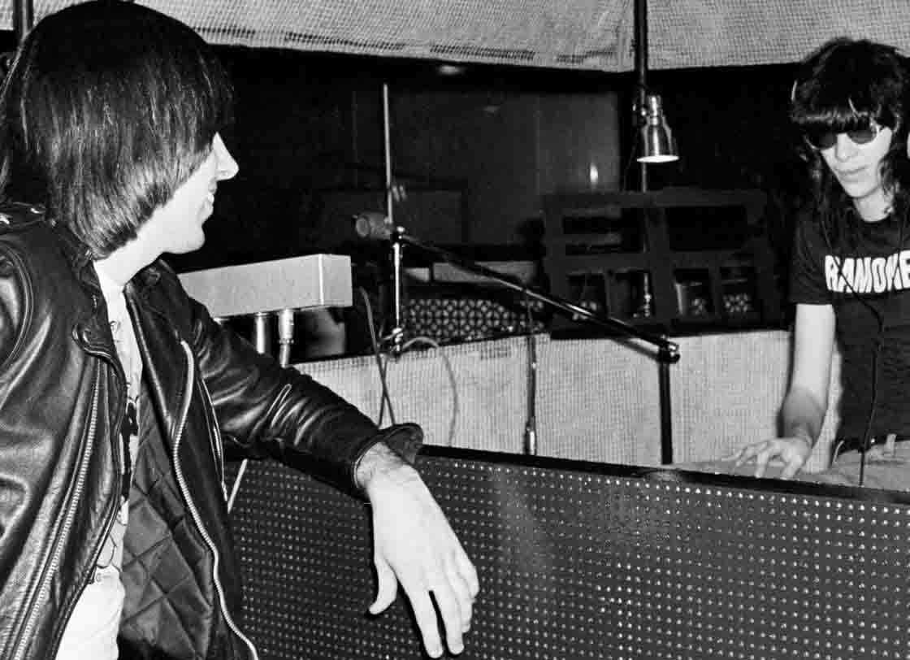

Una calle de Nueva York será renombrada como "RAMONES WAY"
RAMONES WAY (presentado por el miembro del Consejo Koslowitz) se dará a conocer en la intersección de 67th Avenue y 110th Street frente a la entrada principal de Forest Hills High School en el distrito de Queens el 30 de octubre a las 11:00 am.
Este nombre común honrará al legendario grupo de punk rock Ramones. Formada en 1974, la formación original consistía en John Cummings (Johnny Ramone), Jeffrey Hyman (Joey Ramone), Douglas Colvin (Dee Dee Ramone) y Thomas Erdelyi (Tommy Ramone). Los Ramones son a menudo citados como uno de los pioneros originales del sonido punk rock y fue una gran influencia en el movimiento punk de los años 70 en los Estados Unidos y el Reino Unido.
La banda fue reconocida en los 100 mejores artistas de todos los tiempos de Rolling Stone y fue clasificada como la segunda mejor banda de todos los tiempos por la revista Spin. En 2002, la banda fue incluida en el Salón de la Fama del Rock and Roll y también recibió un premio Grammy Lifetime Achievement Award en 2005.